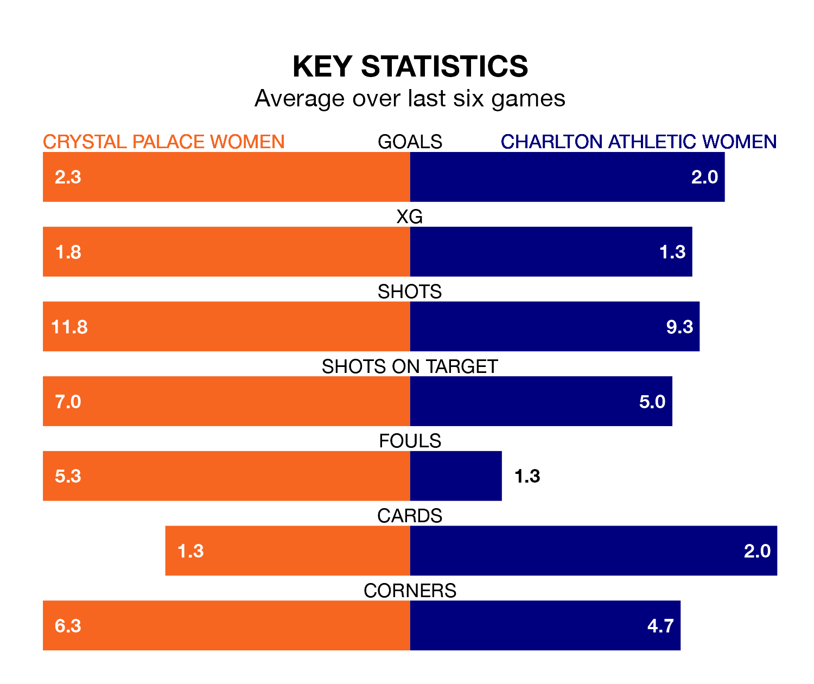

Two of the FA Women's Championship's top sides face each other at the VBS Community Stadium in Sunday's early kick-off, when third-placed Crystal Palace Women host table-topping Charlton Athletic Women.
Crystal Palace have picked up seven wins and three draws from 12 games so far this season, and sit two points below the visitors going into the 2pm match.
Charlton Athletic, meanwhile, have won seven and drawn five of 13, picking up 26 points.
With 37 goals in 12 games so far this season, Crystal Palace are the league's highest scorers with 3.1 goals per game. And they are conceding fewer than average, letting in 15 goals at a rate of 1.2 per game.
Charlton Athletic are also above average scorers, with 1.5 goals per game, compared to a league average of 1.4. They have conceded 0.9 goals per game.
In Elise Hughes, the home team have the league's most on-form striker so far this season. She has notched 13 goals in 12 appearances.
Her goal rate of one every 83 minutes is quicker than that of Kayleigh Green, the visitors' top scorer with a goal every 153 minutes, and a total of six goals in 12 games.
In the last 10 years, Crystal Palace and Charlton Athletic have played each other on 13 occasions. Crystal Palace won two of them, Charlton Athletic six, and they drew five times.
On average, Crystal Palace scored 1.2 goals and Charlton Athletic 1.7 in those matches.
Their last meeting was on October 22, when Charlton Athletic won 3-2 at home.
Crystal Palace are in mixed form in the FA Women's Championship, with three wins and a draw from their last six games.
With four wins and two draws over that period, Charlton Athletic's form is better – they have taken 14 points from 18, compared to Crystal Palace's 10.
Crystal Palace's last match was on January 21, a 2-0 win against London City Lionesses, with Hayley Nolan and Hughes getting the goals for Crystal Palace.
Charlton Athletic beat Blackburn Rovers Women 3-2 last time out, also on January 21, with Bethan Roe, Kate Longhurst and Melisa Filis on the scoresheet.
Updated: 09:07 (UTC), 24/01/24